La SEADACC continue l'œuvre débutée avec
la SEHDACS (Société d'Etudes Historiques Des Anciennes Carrières et cavités
Souterraines) qui trouve son origine dans une association, créée en 1976, le
CAPRA (Cercle Amical et Philanthropique de Recherches Anciennes). Ainsi, la
SEADACC édite toujours de manière régulière la revue Liaison-SEHDACS. Ce
bulletin rassemble des articles au sujet des carrières souterraines, et parfois
d'autres cavités creusées par l'Homme. Depuis le premier bulletin, réalisé de
manière artisanale, jusqu'à nos dernières publications entièrement en couleurs,
la forme et le fond se sont étoffés. Depuis 1996, la publication est
bisannuelle.
cliquez ici
pour voir les couvertures des bulletins précurseurs des liaisons-SEHDACS
Les bulletins sont disponibles auprès de
l'association SEADACC (courriel: association@seadacc.com).
Liaison
SEHDACS numéro 1 - 1980
cliquez ici pour
voir une version numérique basse définition du bulletin n° 01
| Les
agents physiques du milieu souterrain et l'homme |
Jean Yves
Dubois |
| Du noviciat des Capucins à
l'hôpital Cochin |
Alain
Clément |
| Système de classement pour
diapositives |
Gilles
Arbona |
| J.O.du mardi 8 janvier 1980 |
|
| Archive SEHDACS 1 - Ordonnance du
24 août 1778 |
|
| Archive SEHDACS 2 - Extrait de
l'Illustration du 17 Août 1935. |
|
| Au fil des
Potagers |
Alain
Clément |
| Les carrières d'ocre du
Vaucluse |
Gilles
Arbona |
Liaison
SEHDACS numéro2
| Du noviciat des Capucins à
l'hôpital Cochin |
Alain
Clément |
| Première réunion mondiale de
bionique souterraine |
Jean Yves
Dubois |
| Tableau synoptique des surfaces
sous minées |
Gilles
Arbona |
| Les anciennes carrières du Parc
de Saint Cloud |
Alain
Clément |
| Les anciennes carrières de
Charenton le Pont |
Alain
Clément |
| " Conflans près de Paris " de
Hartmann (synthèse) |
Yves
Hardy |
| Chronologie de l'histoire des
carrières |
Anne Marie
Famery |
| Les anciennes carrières de la rue
de Tournon |
Robert
Chardon |
| Voyage au Périgord
Noir |
Michel
Laurent |
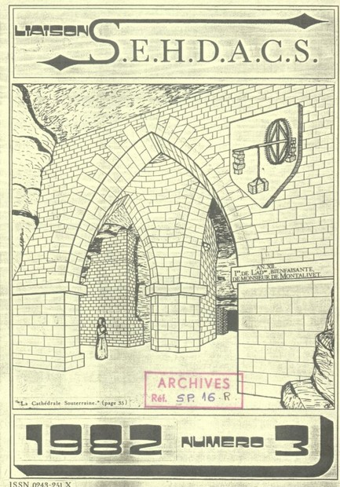
Liaison SEHDACS numéro
3
| Histoire
d'eau |
Yves
Hardy |
| L'observatoire de
Paris |
Michel
Laurent |
| Le champignon de
Paris |
Michel Rouillard & Anne Marie
Famery |
| Mélodies pour un
sous-sol |
Alain
Clément |
| Journées
beauceronnes |
Michel
Laurent |
| La photographie
souterraine |
Robert
Chardon |
| La cathédrale souterraine du
Pecq |
Alain Clément & Robert
Chardon |
| Les anciennes carrières de
Paris |
Alain Clément & Robert
Chardon & Michel Laurent |
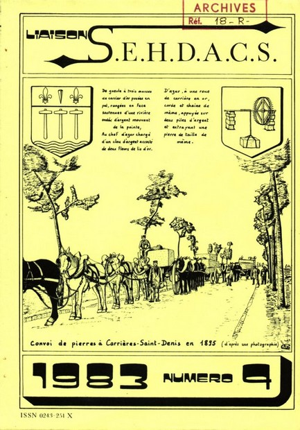
Liaison SEHDACS numéro
4
| Exposition 1984 à
Clamart |
Michel
Laurent |
| L'Historien de l'I.D.C. "Emile
Gérard" |
Alain
Clément |
| L'extraction souterraine de la
pierre à bâtir |
Paul W.
Sowan |
| L'industrie de la pierre à bâtir
à Carrières sur Seine |
Robert
Chardon |
| Agrément de la SEHDACS au
J.O |
|
| Bilan d'étude du patrimoine
souterrain |
Michel
Laurent |
| L'homme et les pierres.
Symbolisme des roches |
Jean Yves
Dubois |
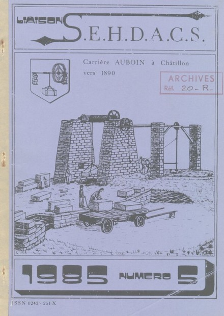
Liaison SEHDACS numéro
5
| Les puits jumelés de Charenton Le
Pont |
Alain
Clément |
| Pérennité
Sociologique |
|
| Les graphismes relatifs aux
confortations souterraines |
Alain Clément |
| Inspection des
carrières |
|
| Les carrières de Paris pendant
l'occupation allemande |
Alain
Clément |
| Les anciennes carrières de Paris,
archives : Projet d'utilisation des carrières pendant la Grande
Guerre |
Georges
Mantoy |
| Les carrières de
Châtillon |
Robert
Chardon |
| Réhabiliation du patrimoine
industriel : le moulin de Pierre de
Châtillon |
Michel
Laurent |
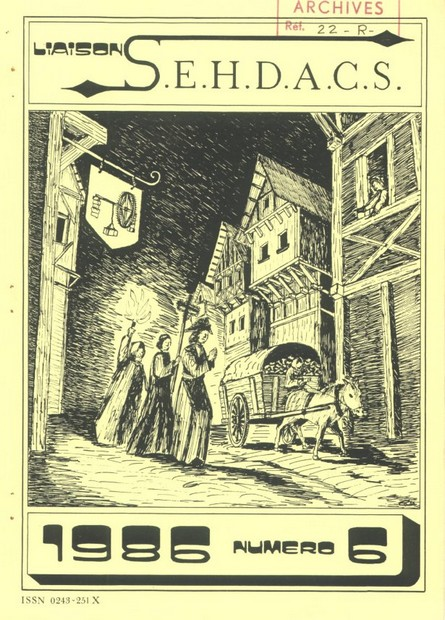
Liaison SEHDACS numéro 6
| Catacombes et carrières de
Paris |
René
Suttel |
| Bicentenaire des catacombes de
Paris |
Robert
Chardon |
| Les anciennes carrières de
Paris |
Alain
Clément |
| La carrière de la
Brasserie |
André Rayroles, Robert
Chardon |
| Une carrière de pierre à bâtir à
Sartrouville |
Francis
Cahuzac |
| Les Réservoirs de
Montsouris |
Alain
Clément |
| Les
carrières de gypse de Romainville |
A
Dievart |
| Découverte d'un sarcophage à
Saint Maurice |
PG Harmant, A
Rayroles |
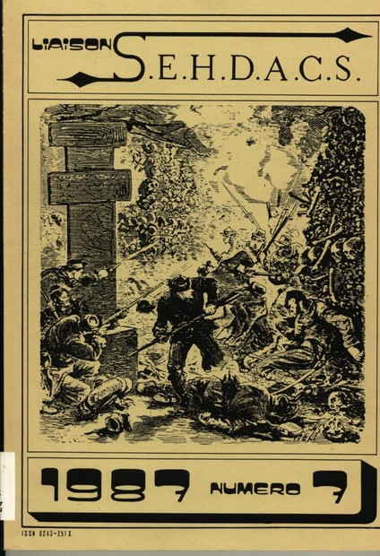
Liaison SEHDACS numéro
7
| Les carrières lors de la guerre
de 1870 et de la Commune |
Alain
Clément |
| Sables et grès de
Fontainebleau |
Jean-Pierre
Melaye |
| Les minéraux de la région
parisienne |
P
Mahieu |
| A Meudon, les carrières ont de
l'avenir |
E
Gosse |
| Archéologie moderne de l'autre
côté de la Manche |
P
Mahieu |
| La
Géobiologie |
C
Faucil |
| Prospectives ontologiques dans
les carrières de Paris |
A
Albright |
| Les carrières de
Meudon |
Robert
Chardon |
| Les
massacres de septembre 1792 et les carrières de
Charenton |
A
Rayroles |
| Les
carrières de Saint Maurice : historique des fontis entre 1860 et
1910 |
A
Rayroles |
| Les nivellements de
Paris |
Alain
Clément |
| Etude des bouteilles dans les
carrières |
Francis
Cahuzac |
| Les fleurs de lys dans les
carrières de Paris |
Alain
Clément |
| Le
travail dans les carrières de pierre à bâtir au début du 18e
siècle |
Georges Mantoy |
| Le
prix et l'utilisation des différentes sortes de pierres à bâtir au 17e
siècle |
Georges Mantoy |
| Les
actes notariés de Goyecque |
Daniel Petit |
| Les
graffiti dans les caves du château de Conflans |
André Rayroles |
| La
géologie de Saint Maurice |
André Rayroles |
| Les
ouvriers carriers de Paris et de sa banlieue en
1848 |
Georges Mantoy |
| Las
carrières de l'Ecole spéciale de travaux publics de
Cachan |
Francis Cahuzac |
| Les
carrières de la Fosse Mossoin |
Francis Cahuzac |
| La
carrière de saint Martin le Noeud |
Jean-Pierre Melaye |
| Les
carrières du viaduc de la Recoumène |
André Rayroles |
| Année 1840 |
| Structurede l'IDC en 1840 |
|
| Statuts de la Société de MM. les marchands carriers de
pierres àbâtir en 1840 |
|
| Carriers membres de la Chambre syndicale en
1840 |
|
| Carriers exploitant les carrières à pierres et
moellons |
|
| Carriers exploitant les carrières de craie, sable, meulières,
etc. |
|
| Liste générale des fabricants de plâtre |
|
| Aspect sociologique des carriers à Montrouge vers
1840 |
|
| Extraitdes "mille et un fantômes" d'Alexandre
Dumas |
|
| Année 1856 |
| Structure de 1'IDC en 1856 |
|
| Carriers membres de la Chambre syndicale en
1856 |
|
| Etude sociologique d'un carrier de Clamart en
1856 |
|
| Avant propos concemant cette monographie (par Georges Mantoy)
|
|
| Sommaire des différentes rubriques de la
monographie |
|
| Année1886 |
| Présentation de l'année 1886 |
|
| Structure de 1'IDC en 1886 |
|
| Carriers membres de la Chambre syndicale en
1886 |
|
| Catalogue des chambres syndicales de la ville de Paris édité
pour l'Exposition universelle de 1900 |
|
| Historique de l'exploitation des matériaux de
viabilité |
|
| Syndicat professionnel des carriers Français fondé en
1885 |
|
| Syndicat professionnel des Carriers Français en
1886 |
|
| Liste des exploitants de carrières et marchands de
pavés |
|
| Archiviste |
frère Capucin Jean Mauzaize |
| Une
cave- carrière sous la rue Mouffetard |
Francis Cahuzac |
| La
plus grande station fermée du Métropolitain
parisien |
Julian Pépinster |
| Les
mystères de Paris |
Alain Clément |
| Le
carriérisme de Guillaumot |
Gilles Thomas |
| La
carrière maçonnique de Guillaumot |
Fabrice Picard |
| L'exploitation de la pierre à Malakoff |
Michel Engelmann |
| Sur
la piste du reliquaire de Saint-Jean-de-Dieu à
Saint-Maurice |
André Rayroles |
| Carriers et carrières du faubourg Saint Jacques de l'Hospice
SaintJacquesdu Haut Pas à l'Hôpital Cochin (1ère
partie) |
| Les
carrières de la voie romaine et l'hospice
Saint-Jacques-du-Haut-Pas |
Alain Clément |
| Le
couvent des Capucins du faubourg Saint-Jacques et la
médecine |
Jean Mauzaize |
| Le
champ des Capucins et l'hôpital Ricord |
Alain Clément |
| Les
champignons de Paris |
Alain Clément |
| Le
Val de Grâce |
Alain Clément |
| GAGNY en Pays d'Aulnoye |
Michel Engelmann |
| Extraits d'un manuscrit d'août 1882 |
Claude Thibault |
| Pierres à Bâtir utilisées en 1970 |
Archive SEHDACS |
| Lignes5 - 6 - 7 et 14 du Métropolitain |
Julian Pépinster |
| Carrières et souterrains des
Buttes-Chaumont |
Francis Cahuzac |
| Carriers et carrières du faubourg Saint Jacques de l'Hospice
Saint Jacques duhaut Pas à l'Hôpital Cochin (2ème
partie) |
| Effondrements et confortations |
Alain Clément |
| L'Observatoire de Paris |
Alain Clément |
| Sociologie du carrier |
Alain Clément |
| Carriers et carrières du faubourg Saint-Jacques : de
l'Hospice Saint-Jacques-du-haut-Pas à l'Hôpital Cochin (3ème
partie) |
| La
grande Chartreuse de Paris |
Alain Clément |
| Le
nivellement de Paris |
Alain Clément |
| La
Fontaine des Capucins |
Alain Clément |
| Utilisation des Carrières au cours des grandes
guerres |
Alain Clément |
| Exploitations minérales - carrières et prospections en milieu
francilien |
| La
carrière de grès des Maréchaux |
Michel Engelmann |
| Représentation des risques liés aux carrières de calcaire en
milieu urbain et utilisation du sous-sol. La commune de
Charenton-le-Pont |
Jean-Luc Faure |
| Saint Thomas du Plessis |
Christian Martin le Bour |
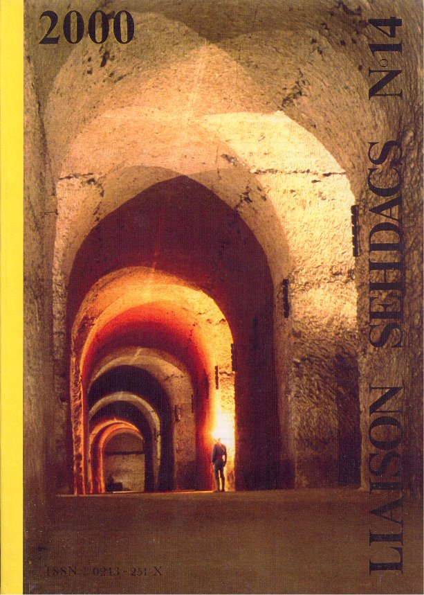
Liaison SEHDACS numéro 14
.Année de parution 2000
|
Carriers et carrières du Faubourg
Saint-Jacques : de l'hospice Saint-Jacques-du-Haut-Pas à l'hôpital
Cochin (4ème partie)
|
Le puits
elliptique des Capucins
|
Alain
Clément
|
Les réservoirs
de Montsouris
|
Alain
Clément
|
Les fleurs de lys sous
Paris
|
Alain
Clément
|
|
Exploitations minérales - carrières et
prospections en milieu francilien
|
Les carrières du fort
d'Ivry
|
Alain Brachet-Sergent
|
Sécurité dans les puits
d'extraction
|
Michel Engelmann
|
Termes relatifs aux
carrières
|
IGC
|
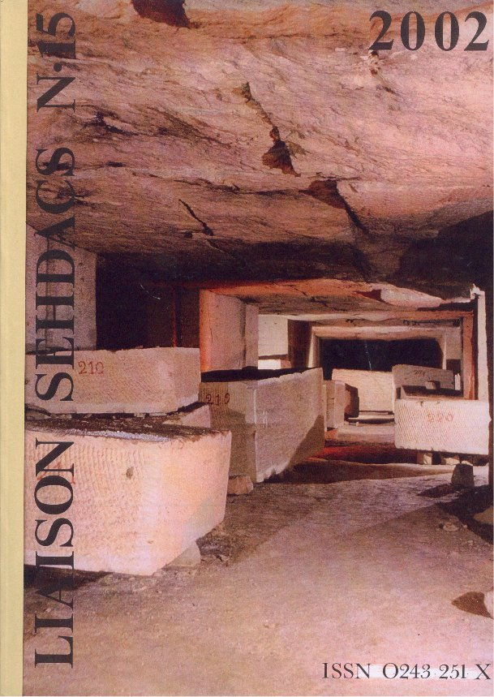
Liaison
SEHDACS numéro15
Année de parution
2002
|
Carriers et carrières du
faubourg Saint-Jacques (5ème partie)
|
| Principaux sites cultuels |
Alain Clément |
| La
crypte Saint-Denis |
Alain Clément |
| Les
brasseries souterraines |
Alain Clément |
| Les
richesses du bassin parisien |
Alain Clément |
|
Exploitations minérales -
carrières et prospections en milieu francilien
|
| L'abattage à la lance |
MichelEngelmann |
| Les
souterrains de la Grande Guerre (1ère partie) |
Nathalie Bosch & Jean-François
Weiss |
| Les
égouts souterrains de Paris |
Jean-Luc Faure |
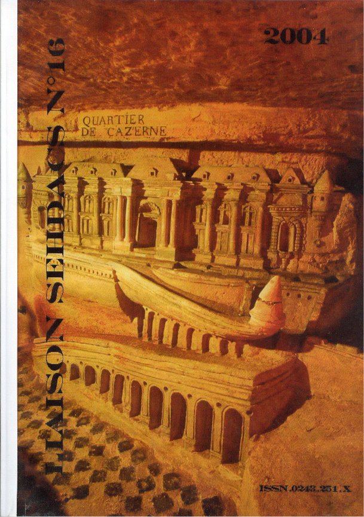
Liaison
SEHDACS numéro 16
Année de parution 2004
|
Les sculptures de
Port-Mahon
|
| Un site historique au
coeur des catacombes de Paris |
Luc
Bucherie
|
|
Carriers et carrières du
faubourg Saint-Jacques (6ème partie)
|
| Le
nivellement Haussmanien |
AlainClément |
| Salle de gardes des hôpitaux |
AlainClément |
| A
la recherche du Diable |
Saint-Simon |
| Découverte emblématique 2004 |
AlainClément |
|
Un homme de pierre hors du
commun
|
| Hommage à Pierre Noël |
Alain Clément |
|
Actes notariés
|
| Recueil d'actes notariés au XVIè siècle |
Ernest Coyecque |
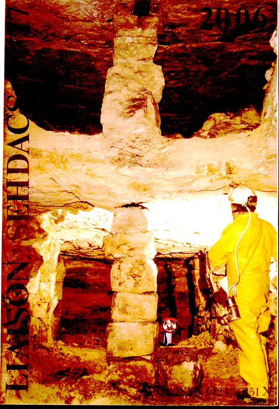
Liaison
SEHDACS numéro17
Année de parution mars
2006
Les Carrières sous le plateau de
Gravelle:
Alain
Clément
La plus importante nécropole de
Paris:
Alain Clément
Carrière de Lérouville:
Archives SEADACC
La fontaine des
Capucins:
Alain
Clément
Historique des Cabinets
Minéralogiques:
Alain Clément
Dangerosité et sociologie du métier de
carrier:
Alain Clément
Les
graffiti ou la "mémoire de la ville":
Alain Clément
Charles-Axel Guillaumot:
Suzanne de SENLIS
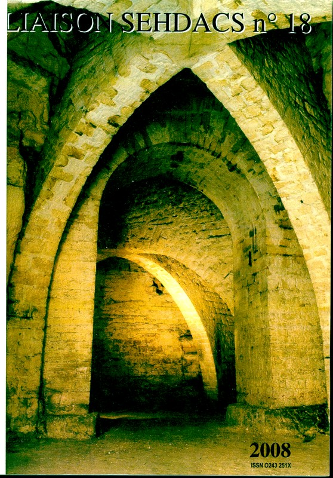
Liaison SEHDACS
numéro 18
Année de parution 2008
Montreuil - les carrières
Morel:
Fabrice Picard
Les
parois des galeries sous Paris - le tableau blanc d'une oeuvre au
noir:
Gilles Thomas
Inscriptions souterraines
relatives à la 1ere Guerre mondiale:
Gilles Thomas
Quand le
Génie avait du génie! construction du fort d'Ivry:
Alain
Brachet-Sergent
Ivry - Etat général des
carrières:
Alain
Brachet-Sergent
Zarafa la girafe de Charles X:
Alain
Brachet-Sergent
Manutention et transport dans les
carrières:
Jean-Luc Faure
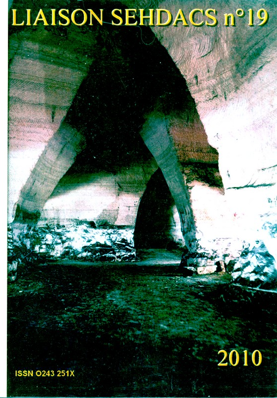
Liaison SEHDACS numéro 19
Année de parution 2010 (disponible)
cliquez
ici pour voir un extrait du liaison Sehdacs n° 19
Carrières du Fort d'Ivry - Circulation dans les anciennes
carrières:
Alain
Brachet-Sergent.
Carrières du Fort d'Ivry - Ah vous faites aussi
du cinéma:
Alain
Brachet-Sergent.
En passant par les archives - servitudes militaires et
polices des carrières:
Alain
Brachet-Sergent.
L'exploitation de Gypse dans le massif de l'Hautil -
les anciens travaux:
Michel
Engelmann
Le
prolongement de la ligne de Sceaux à la Fin du XIXeme Siècle - travaux en
carrière et en tunnel:
Jean-Luc Faure.
Les Carrières comme ultime
refuge:
Gilles Thomas.
Un "illustre inconnu" à la tête de l'IGDSCP -
Bralle:
Gilles
Thomas.
Quand l'hôpital Cochin s'appelait déjà
Cochin:
Gilles
Thomas.
Sables de Fontainebleau et des
environs:
Jean-Pierre
Melaye.
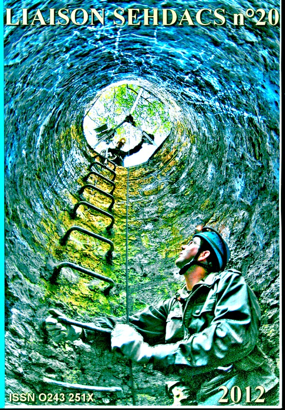
Liaison
SEHDACS numéro 20
Année de parution 2012
cliquez
ici pour voir un extrait du liaison Sehdacs n°20
L'exploitation de Gypse dans le massif de l'Hautil -
les travaux modernes:
Michel Engelmann.
La carrière
Hennocque et la traversée de la ligne de chemin de fer
Ermont-Valmondois:
Jean-luc
Faure.
Carrières sous
le dépôt de Montrouge et le cimetière de Bagneux:
Jean-luc Faure.
En passant par les
archives:
Alain
Brachet-Sergent.
Le guide de ceux qui veulent
bâtir:
Alain
Brachet-Sergent.
Archives de la
révolution:
Alain
Brachet-Sergent.
La circumnavigation d'un crâne étudié par
Broca:
Marina Ferrand et Gilles
Thomas.
Les dessous
creux de l'assistance publique:
Gilles Thomas.

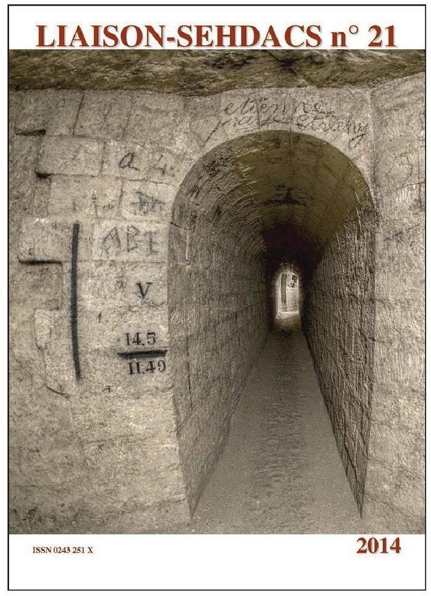
Liaison
SEHDACS numéro 21
Année de parution 2014
style="color:#ff8040">
cliquez
ici pour voir un extrait du liaison Sehdacs n°21
style="color:#ff8040">
cliquez
ici pour accèder à l'erratum page 13 du liaison n°21 (coupe longitudinale du
tunnel de montrouge)
LE TUNNEL DE
MONTROUGE SUR LA PETITE CEINTURE ET LES CARRIERES:
Jean-luc FAURE.
QUE RESTE-T’IL DE
VISIBLE DES ANCIENNES CARRIERES DANS L’OSSUAIRE:
Gilles
THOMAS.
LES MODIFICATIONS DU DECOR DE
L’OSSUAIRE:
Gilles
THOMAS.
HISTOIRES DE FEMMES ET DE DESSOUS
!
Gilles
THOMAS.
QUAND LES CARRIERES SOUTERRAINES « DONNAIENT LA VIE
»:
Gilles
THOMAS.
LA CARRIERE DE SAINT MARTIN LE NOEUD PRES DE
BEAUVAIS:
Jean-Pierre
MELAYE.
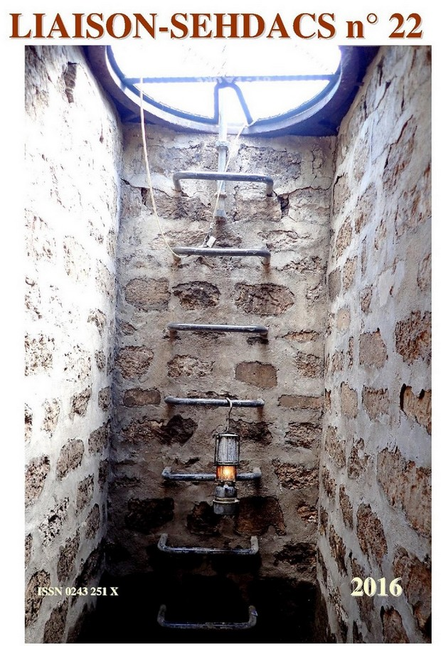
Liaison
SEHDACS numéro 22
Année de parution 2016
cliquez
ici pour voir un extrait du liaison Sehdacs n°22
CHAUX DE SENLIS, CHAUX DE TOURNAY, DE LA STATION DE LA
LOUPE (LA MANCELIERE), AINSI QUE CIMENT
DEPORTLAND
Gilles
THOMAS.
LA CHAUX ET SES BASSINS DANS LES ANCIENNES CARRIERES DE
PARIS.
Franck CHARBONNEAU &
Yann ARRIBART.
INVENTAIRE DES BASSINS À CHAUX SOUS
PARIS
Franck CHARBONNEAU &
Yann ARRIBART.
CARRIERES DE LA REGION PARISIENNE ET BANDE DESSINEE
INTERNATIONALE
Gilles
THOMAS.
DE QUELQUES GRAFFITI(S) DATANT DE LA DEUXIEME GUERRE
MONDIALE, DECOUVERTS DANS UNE DES CARRIERES DE LOCHES
(INDRE-ET-LOIRE)
Gilles
THOMAS.
LES CATACOMBES DE PARIS » DE PIERRE-LEONCE IMBERT
(1867) VERSUS « PARIS SOUTERRAIN » DU MEME PIERRE-LEONCE IMBERT
(1876)
Gilles
THOMAS.
L’ABRI DE DEFENSE PASSIVE DU SIEGE DE LA CPDE
(IMMEUBLE VIENNE-ROCHER)
Gilles
THOMAS.
NADAR : ENCORE PIRE QU’UNE COMMEMORATION «
EN-DESSOUS DE TOUT ! », DES ANNIVERSAIRES D’EVENEMENTS FONDATEURS PASSES
SOUS SILENCE
Gilles
THOMAS.
LA CARRIERE DE
VARREDDES.
Jean-Pierre
MELAYE.
HOMMAGE A ALAIN
CLEMENT
Jean-Luc FAURE &
Philippe THEVENON.
L’ECLAIRAGE PORTATIF DES OUVRIERS DU SOUS-SOL DU
BASSIN PARISIEN : Ire PARTIE : PANORAMA.
Jean-Luc
FAURE.
L’ECLAIRAGE PORTATIF DES OUVRIERS DU SOUS-SOL DU
BASSIN PARISIEN : IIe PARTIE : LA LAMPE DE SECURITE A ACETYLENE SYSTEME « KLEIN
PUJOL ».
Jean-Luc
FAURE.
L’ECLAIRAGE PORTATIF DES OUVRIERS DU SOUS-SOL DU
BASSIN PARISIEN : IIIe PARTIE : FOURNISSEURS ET FABRICANTS, BIBLIOGRAPHIE ET
SOURCES.
Jean-Luc
FAURE.
HUIT CENTS ANS D’ECLAIRAGE A PROVINS ET DANS SON
BASSIN D’EXTRACTION D’ARGILES.
Olivier
DEFORGE.
UNE VISITE DES CARRIERES DE GODSTONE.
Rémi
CHATEAUNEU.
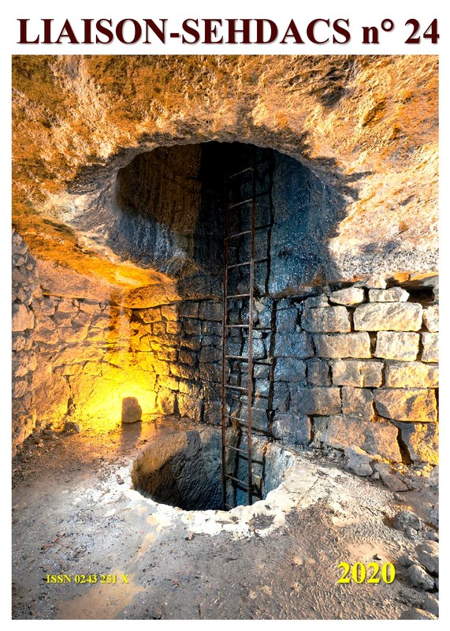
Liaison
SEHDACS numéro 24
Année de parution 2020
La gare de Paris - Gobelins et la station des olympiades : La consolidation moderne des anciennes carrières.
Jean-Luc
FAURE.
Plus de quarante ans de préservation du patrimoine souterrain :L’aventure de la carrière des Capucins.
Jean-Luc
FAURE.
Le nouveau Musée de la Libération de Paris :Un conte des temps moderne : « Le héros, sa femme, la patronne et la princesse ».
Gilles THOMAS
Quand la Pompe à feu avait des fuites… leurs traces dans carrières.
Gilles THOMAS
Tentative de comparaison entre le mastaba de Ty, et sa reconstitution sous Paris en 1900.
Gilles THOMAS et Vân TA MINH
Anecdotes à propos de recherche et visite d’anciennes carrières souterraines en Bourgogne : Asnières-lès-Dijon.
Jean-Luc FAURE

{kind=link}